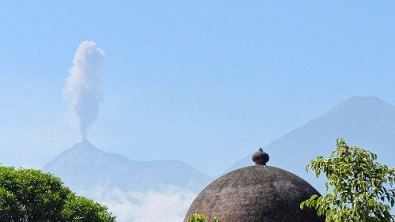
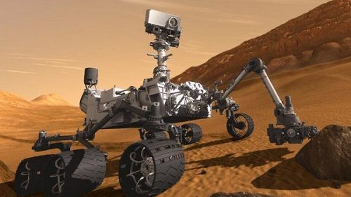
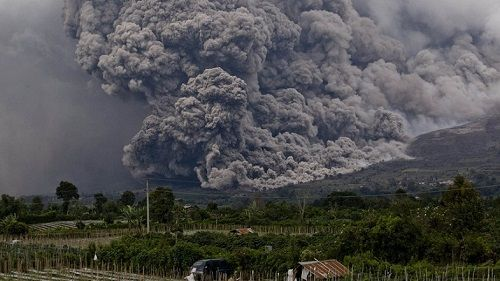
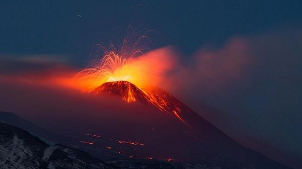
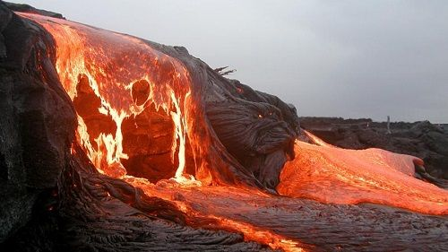

На нашем сайте подобраны наиболее интересные и опасные вулканы со всего мира.
Вулканы разделены по континентам и странам. Подобрать вулкан для рабочего стола можно в разделе
Фотографии. В разделе Новости самые последние
события из мира вулканов.
Извержение вулкана Сатьягито вызвало тревогу в Гватемале и Мексике

Вулкан Сантьягито, который находится в гватемальском департаменте Кетсальтенанго выбросил пепловый
столб на высоту 5 км, сообщает РИА Новости.
Национальная служба по уменьшению последствий стихийных бедствий Гватемалы сообщила о сильных
подземных толчках и выбросе в близлежащих зонах продуктов вулканической деятельности.
Ведется постоянный мониторинг ситуации. В Мексике, в штате Чьяпас, который граничит с Гватемалой,
объявлена тревога. Как сообщили в службе гражданской обороны, облако пепла направляется на крупный
город Тапачула.
По данным ученых, обнаружены следы извержений вулкана на Марсе

Как сообщают Актуальные Новости, учеными получены данные о полученном с Марса минерале,
свидетельствующем об вулканическом извержении. Так, ученым удалось выяснить, что на Марсе много
миллионов лет назад происходили постоянные перманентные вулканические извержения.
Данные о минерале тридимита получены с инновационной космической лаборатории, которая расположена на
марсоходе Curiosity. Этот минерал является свидетелем вероятной активности вулкана. В основном камни
этого минерала обнаружены возле кратера Гейла. На основе этой информации ученые утверждают. Что
миллионы лет назад на Красной Планете происходила бурная вулканическая активность.
Пока неизвестно, где находятся вулканы, так как по отметкам ученых к кратеру их могло принести течение
воды. Но ясно одно, что на Марсе была достаточно сильная вулканическая активность. Это открытие
вполне может повлиять на изменение теории об эволюции Красной Планеты.
В Индонезии произошло извержение вулкана Синабунг, есть жертвы

В субботу произошло извержение вулкана Синабунг в Северной Суматре, в результате чего три человека
погибли и четверо серьезно ранены, сообщает ТАСС со ссылкой на агентство Синьхуа.
Как сообщает представитель Национального агентства по ЧС, было сообщено об опасности извержения, но
местные жители продолжали работу на рисовых полях. В результате стали жертвами стихии. Сообщается,
что разрушено несколько домов.
Расположен вулкан вблизи города Медан(столица Северной Суматры), высота его 2460 м. Он является одним
из 130 активных вулканов Индонезии. Впервые, практически за 400 лет вулкан начал извергаться в 2010
году. После этого он стал проявлять активность и периодически извергается, последнее извержение
произошло в начале 2014 года, но в 2015 он вновь проявлял незначительную активность.
В Италии произошло извержение самого большого в Европе вулкана Этна

Серия извержений на вулкане Этна произошла в субботу в Италии, сообщает Lenta.ru.
Извержение сопровождали мощные выбросы пепла, которые длились несколько часов. А также происходило
излияние лавы. Все это проявлялось с юго-восточного и западного склонов вулкана. В трех ближайших к
вулкану деревнях: Педара, Виагранда, Джиарра зафиксировано выпадение незначительного количества пепла.
Вулкан Этна расположен на Сицилии, высота его составляет 3328 м. Это самый активный и крупнейший
действующий европейский стратовулкан. В декабре 2015 произошел последний его выброс. Вулканические
извержения происходили около 200 раз.
Куски Земли, которые извергают вулканы, насчитывают 4,5 миллиарда лет

Ученые обнаружили вещество мантии Земли, которое предположительно было создано в первые 50 миллионов
лет после рождения солнечной системы, сообщает издание Xata.co.il
Возраст материала, найденного среди вулканических скал на канадском острове Баффинова Земля в районе
Соломоновых островов на юге Тихого океана, составляет 4,5 миллиарда лет.
На протяжении многих лет, ученые предполагали, что древняя мантия смешалась с более молодыми породами
и в итоге разрушилась и расплавилась. На основании нового химического анализа удалось установить,
что некоторые древние породы сохранились в излившемся базальте, созданном гигантскими извержениями
вулкана.
Возраст таких вулканических пород составляет 60-120 миллионов лет, но встречается и более древний материал.
Такой вывод был сделан учеными из Института Карнеги в Вашингтоне, когда они изучили изотопы, из
которых более полезным оказался вольфрам. При радиоактивном распаде изотопа элемента гафния-182
создается вольфрам-182. Через 50 миллионов лет после формирования Солнечной системы произошло
исчезновение гафния на Земле. Это примерно около 4,567 миллиардов лет назад. В итоге, по сравнению
с молодыми породами старые породы сохранили больше изотопа вольфрам -182